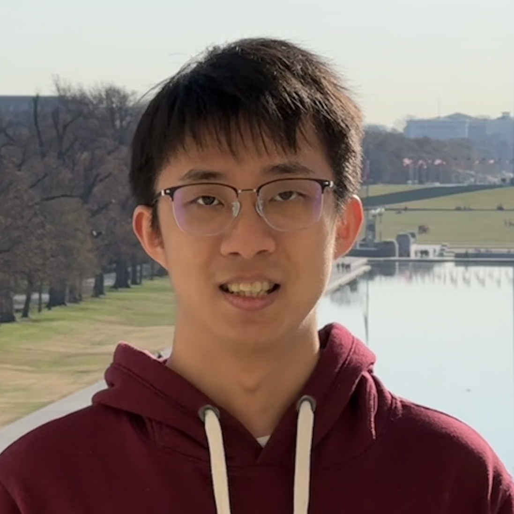

Towards On-Device Evidence Gathering for Intimate Partner Infiltration: A Feasibility Study for Joint Identity-Action Detection
Weisi Yang, Shinan Liu, Feng Xiao, Nick Feamster, and Stephen Xia
ACM IMWUT, 2026
Paper

Hi, I’m Weisi! I am a 3rd-year Ph.D. student in Electrical and Computer Engineering at Northwestern University, advised by Prof. Stephen Xia, and a member of the IMEC Lab.
My current research focuses on efficient large language model (LLM) inference. In particular, I develop fast algorithms and efficient system runtimes to better utilize existing hardware resources and improve the performance and efficiency of LLM inference.
Previously, I earned my B.E. in Computer Science from Yingcai Honors College at the University of Electronic Science and Technology of China (UESTC). I was also fortunate to work with Shinan Liu and Prof. Nick Feamster during my research at the University of Chicago.
Weisi Yang, Shinan Liu, Feng Xiao, Nick Feamster, and Stephen Xia
ACM IMWUT, 2026
Paper
B.Eng. in Computer Science
Yingcai Honors College · GPA: 3.98/4.00
I am from Chengdu, Sichuan, China, home to giant pandas 🐼 (objectively the cutest animals in the world).
I am a loyal FC Barcelona supporter. 🔵🔴